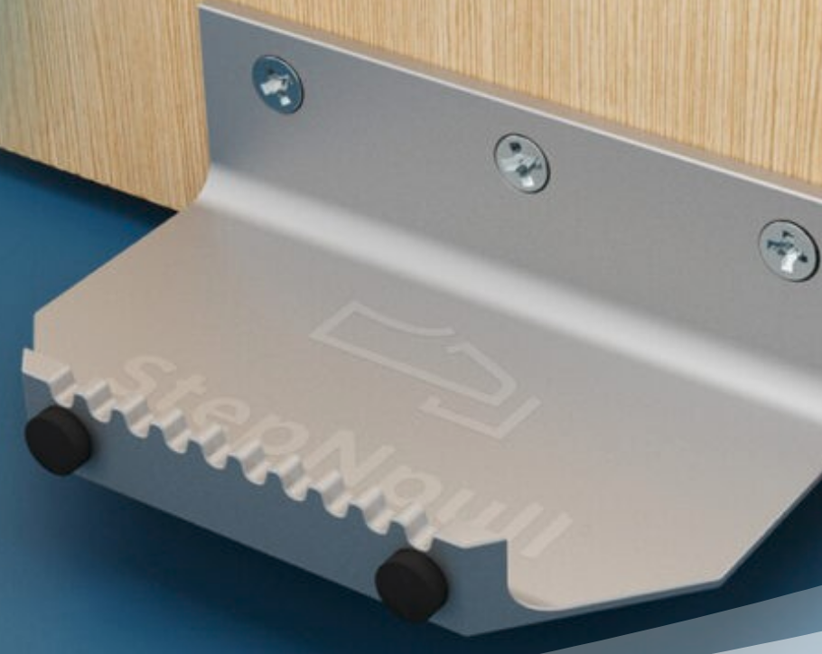
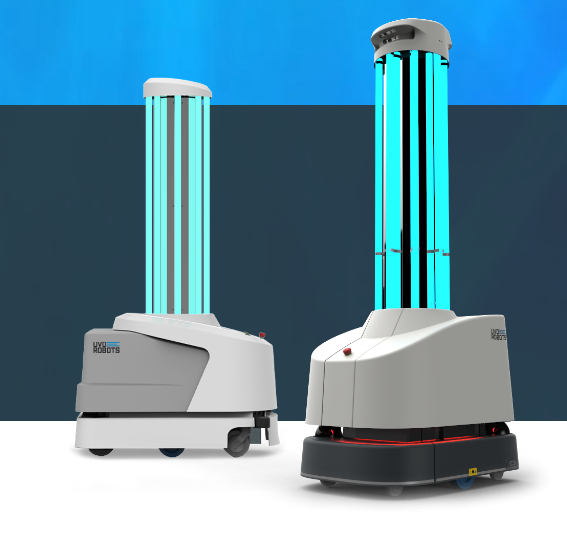
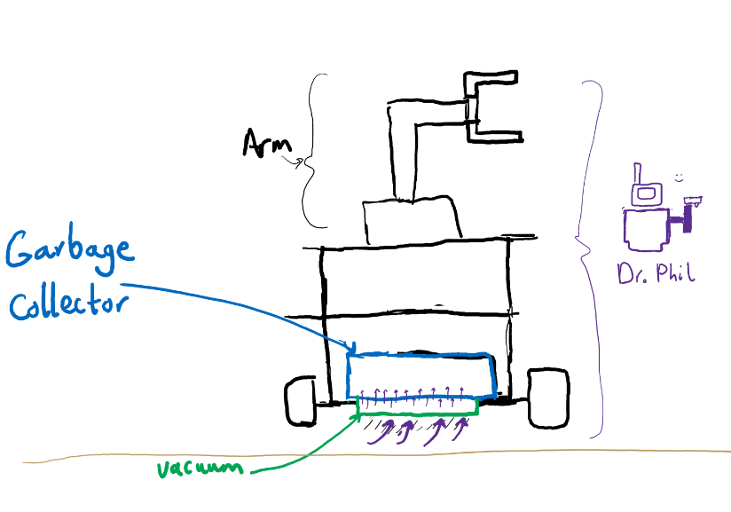

Dr.Phil is a fully autonomous robot which sanitises points of contact in buildings.
Dr.Phil automatically navigates through around floors on a schedule set via companion App, and sprays disinfectant on high priority contact points.
Dr.Phil is perfect for hospitals, businesses or even hotels, especially those requiring more sterile environments.
Our goal with Dr.Phil is to increase the efficiency of janitors and at the same time reduce their risk of contacting possible contaminants.
We can help you create a safe environment where employees, customers or patients won't need to worry about their health being compromised.
Use cases
As an office manager I want to schedule a sanitisation run every hour to reduce the number of cleaning shifts and save money.
As a cleaner I want to be able to come to work when there is real work to be done so I don't have to sit idle until my shift is over. I also want to minimise physical contact with surfaces that are touched by many people.
As an employee in a busy office I want to be able to work in the midst of a pandemic knowing there is little risk of infection if i touch things I need to use over the course of a day
Functionality
>Mapping unknown environments:The Dr.Phil prototype is built on top of a turtlebot, it is able to fully map out unknown environments using its LIDAR sensor, enabling us to build a map of the floor at the end. It can travel around a floor by itself without manual intervention, and manipulate its environment using its robotic arm.
>Quick Setup: Dr.Phil's ease to setup makes it portable as a result.
>Cutting-edge ML Vision System: Dr.Phil creates a map of its environment, detects all of the surfaces of interest (currently door handles) and saves their locations, and then disinfects these surfaces using an easily refillable spray, minimising physical contact. The fast detections allows us to use this strong tool in small computer boards as well like Raspberry Pis!
>Easy-to-use UI: Dr.Phil can be controlled via an easy-to-use app, where one can set cleaning schedules as well as take manual control from anywhere. It is designed with maximum friction for users, and to provide the best experience of Dr.Phil. The app also shows Lifetime statistics and current status of Dr.Phil.
>Emergency halt procedure: For safety, an emergency procedure has been implemented so the robot can quickly return to its station. The app allows the user to immediately stop the robot wirelessly. In addition, the installation of LED strip to Dr.Phil helps convey its current state of operation to nearby people.
Whilst sanitation is of course important during the pandemic, market reports indicate disinfecting robots will still be in demand afterwards. One report (Research and Markets, 2020) estimates a annual growth rate of 36% for the disinfectant robot market between 2020-2025, from $341.3 million USD to $2325.4 million USD. Another report (Persistence Market Research, 2020) predicts a ten-fold increase in value of the market, with an annual compounded growth rate (CAGR) of 27%.
We've also asked participants in our user study whether they'd be comfortable with having an autonomous robot in the workplace. 5/7 said yes, and 7/7 responded yes if safety features (such as emergency halting) were implemented. However, as the participants were from another SDP group, these results are not representative of society as a whole, although it demonstrates a need for a robust set of safety features.
b. Competition
There are a number of products, both robotic and more generic, which aim to tackle the problem of unsafe contact surfaces.
A simple solution is given by StepNPull, a "device which allows you to open a door
hands free by using your foot or even a walking stick,
avoiding any contact with door handles or surfaces."

These have the benefit of being cheaper (at only £33 per handle) and easier to install/maintain. However, while these help to prevent the spread of disease and germs through doors, they still do not eliminate this possibility entirely and are not applicable to different types of surfaces. StepNpull also wouldn't work for wheelchair users. Dr.Phil is easily transportable to different buildings and in future extensions can support cleaning different types of contact points.
A more comparable solution would be the Ultraviolet(UV) roller robots, such as those by UVD robots.

UV is an excellent method of killing micro-organisms, however UV is also dangerous to humans , meaning it can't be used in currently occupied rooms. Dr. Phil uses a 70% alcohol disinfectant spray which effectively kills pathogens and has a low chance of affecting humans even on contact, allowing it to be used under these scenarios.
Most disinfectant robots on the market are an order of magnitude more expensive then Dr. Phil, ranging from £32650 to £53370. Dr.Phil is currently projected to cost only £4000.
In relation to janitors, they themselves are possible transmission vectors, have limited working hours, and cost on average £20000 per year according to glassdoor. Our product is an opportunity for companies to add automation to their sanitisation protocols. As a result, this will cut costs and make disinfectant routines would be more efficient.
Potential for future development
We found a number of potential improvements to Dr. Phil, mostly revolving around sanitising more places and more things.
Door opening:
We've made significant progress with door opening, as shown below. We are confident this future can be fully developed as part of a full prototype. As part of our original minimum viable product, a door-opening Dr. Phil means doors won't have to be left open for it to be able to disinfect the floor.
Accessing different floors via elevator: Dr.Phil currently can only navigate one floor. Using vision,
Dr.Phil could locate lifts and use them to traverse floors safely.
This would mean a single robot could potentially be responsible for multiple floors/small multi-storey buildings.
Our team has made considerable progress with vision, and extensions using the Yolo network could easily be applied to detect lift interfaces. With a full prototype with a larger, more accurate arm, we could easilly incorporate this feature
Sanitising more kinds of door handles/contact points:
Dr.Phil currently can only disinfect simple door handles.
By training more types of handles/contact points, Dr.Phil will be able to recognise these in buildings and disinfect those as well.
All of our algorithms were designed to be extensible in this regard.
Vacuum cleaning functionality:
Dr. Phil could be easily extended with a vacuum cleaning module to vastly increase its applications. With the ability to navigate around rooms and open doors through the handles it cleans, it would clear the floor from dust to provide extra hygiene and comfort. We have already designed algorithms allowing Dr. Phil to travel every square inch of a floor which would be perfect for this application.
The addition of this feature would mainly entail a hardware redesign of our prototype as we would need to allow for space to be able to take out and reinstall the garbage collection bag. Here's an early sketch of our vision of the robot:

Vacuum Early Sketch. *does not depict the result of the final product, but merely showcasing the expected placement of the vacuum
More additions to User Interface:
> Users can see "live" data of the map on the app exploring every 5-10 seconds - to allow for easier troubleshooting and so you are more aware of much the robot has completed mapping the floor.
> Let's face it, no matter how good a system is, it's never 100% perfect. Once Dr.Phil maps out a room, we will introduce an optional editing functionality of the map to allow users to calibrate the location of the doors themselves with respect to the floor plan mapped by Dr.Phil, or to do the mapping of doors themselves. Dr.Phil doesn't need to know the exact locations; approximations is all it needs, and only needs to do this once at the beginning!